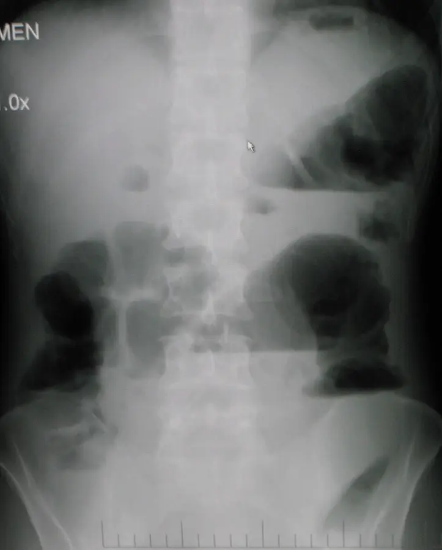

Nausées et vomissements
Un symptôme banal qui cache parfois une urgence : on nomme la cause avant de prescrire l’antiémétique.
Dix concurrents, du plus fréquent au plus rare
Les dix diagnostics ci-dessous sont de vraies causes concurrentes, tirées du tableau suisse de diagnostic différentiel[4]. L’ordre suit la fréquence attendue en pratique, et le badge rouge classe les trois causes qui tuent : E1 d’abord, puis E2 et E3.
- DX.1 — Effet indésirable médicamenteux Premier rang : les médicaments sont, selon la revue suisse de 2020, sans doute la première cause de vomissements, des antibiotiques aux antiarythmiques[9].
- DX.2 — Gastro-entérite aiguë Deuxième rang, parmi les causes fréquentes : sans douleur abdominale aiguë ni céphalée marquée, un vomissement aigu relève le plus souvent d’une infection digestive qui guérit seule[14].
- DX.3 — Nausées et vomissements de la grossesse Troisième rang : parmi les femmes enceintes, jusqu’à 70 % sont nauséeuses au premier trimestre, cause endocrinienne en tête[9].
- DX.4 — Nausées et vomissements postopératoires Quatrième rang : parmi les patients opérés, la fourchette suisse va de 10 à 30 %, et le score d’Apfel affine ce risque[1].
- DX.5 — Nausées et vomissements de la chimiothérapie Cinquième rang : parmi les patients sous chimiothérapie, 30 % sont nauséeux, selon le potentiel émétisant de la cure[1].
- DX.6 — Atteinte vestibulaire Sixième rang, parmi les causes du tableau suisse : le mal des transports, la névrite vestibulaire et la maladie de Ménière y figurent sans pourcentage[4].
- DX.7 — Gastroparésie Septième rang : parmi les patients avec un diabète de type 1, 20 à 40 % développent une gastroparésie, mais ce terrain reste une minorité des consultations[9].
- DX.8 — Occlusion intestinale 🚩 E2 Huitième rang, parmi les causes chirurgicales : adhérences, tumeurs, volvulus et invaginations bloquent le grêle ou le côlon, et l’obstacle étranglé se perd en heures[9].
- DX.9 — Hypertension intracrânienne 🚩 E3 Neuvième rang, parmi les causes neurologiques : tumeur, saignement ou blocage du liquide céphalorachidien donnent des vomissements soudains, souvent sans nausée préalable[9].
- DX.10 — Ischémie mésentérique aiguë 🚩 E1 Dixième rang : cette cause est rare, environ une hospitalisation sur mille, mais elle tue le plus vite des dix[12].
1. Définition et sémantique
La nausée est une sensation déplaisante d’envie de vomir ; elle accompagne de nombreuses maladies et revient sans cesse en médecine de premier recours[1]. Le vomissement, lui, est l’expulsion active du contenu gastrique, si bien que les deux mots ne s’échangent pas.
On distingue le vomissement de la régurgitation, qui remonte sans effort ni nausée, et de la rumination. Cette distinction oriente déjà : une régurgitation fait penser à l’œsophage, alors qu’un vomissement mobilise le centre bulbaire et ses afférences[6].
La classification de la Revue médicale suisse sépare les causes par système et distingue le tableau aigu du tableau chronique[4]. Pour trancher, le repère temporel suisse de 2020 retient alors l’aigu en dessous d’une semaine et le chronique au-delà d’un mois[10].
Le synonyme admis est « envie de vomir ». On évite « gastrite » ou « indigestion », parce que ces mots affirment une lésion que le symptôme seul ne prouve jamais.
Le cadre n’est donc pas un diagnostic, mais une porte d’entrée. Il voisine avec la douleur abdominale, la céphalée et le vertige, et c’est le symptôme associé qui ouvre la bonne liste.
Trois mots qui ne désignent pas le même geste
Le vomissement est actif : le diaphragme et la paroi abdominale se contractent sous la commande du centre du vomissement, qui réagit quand un seuil d’activation est franchi[6]. Il s’annonce souvent par une nausée, une salivation et des sueurs.
La régurgitation est passive et sans nausée ; elle évoque un sphincter œsophagien inférieur insuffisant ou une sténose de l’œsophage. La rumination, enfin, ramène sans effort un bol déjà avalé, souvent dans un contexte psychosomatique.
Le piège d’examen consiste à donner un antiémétique à une régurgitation. Rien n’y répond, puisque le centre du vomissement n’est pas en cause.
2. Épidémiologie (Suisse, puis Europe)
En Suisse, on estime en 2017 qu’environ 7 % de la population générale souffre de nausées[1]. Si la maladie chronique est avancée, cardiaque, rénale ou hépatique, la proportion monte à 30 %, ce qui pèse sur l’observance[1].
Après une opération, 10 à 30 % des patients sont nauséeux selon la même revue[1]. La revue suisse de 2020 avance un chiffre voisin, environ 25 % des interventions, et le risque augmente quand l’opérée est une femme ou subit une laparotomie[9].
Sous chimiothérapie, 30 % des patients restent nauséeux, car la cure dicte ce risque[1]. Une cure à haut risque dépasse 90 % de vomissements sans prophylaxie, tandis qu’une cure modérée se situe entre 30 et 90 %[2].
La grossesse fournit la plus grande cohorte, car le Forum Médical Suisse décrit des nausées chez jusqu’à 85 % des femmes enceintes en 2010[11]. L’hyperémèse gravidique reste rare, de 1 à 20 pour 1000 grossesses, mais elle hospitalise[11].
Le diabète de type 1 se complique de gastroparésie dans 20 à 40 % des cas, d’après la revue suisse de 2020[9]. Ce chiffre explique donc pourquoi un diabétique qui vomit après les repas mérite une autre lecture qu’un jeune adulte fébrile.
À l’autre bout du spectre, l’ischémie mésentérique représente environ une hospitalisation sur mille, car elle reste rare, mais elle frappe surtout après 60 ans, plus souvent la femme[12]. En Europe, l’étude AMESI de 2022 à 2023 l’a retrouvée dans 0,038 % des admissions adultes, et 49 % de ces malades sont morts à l’hôpital[13].
| Groupe | Proportion | Source et année | Lecture clinique |
|---|---|---|---|
| Population générale | Environ 7 %[1] | Revue médicale suisse, 2017 | Le symptôme est banal, ce qui rend le tri indispensable. |
| Femmes enceintes | Jusqu’à 85 %[11] | Forum Médical Suisse, 2010 | Un test de grossesse précède tout antiémétique chez la femme en âge de procréer. |
| Patients opérés | 10 à 30 %[1] | Revue médicale suisse, 2017 | Le score d’Apfel décide de la prophylaxie. |
| Patients sous chimiothérapie | 30 %[1] | Revue médicale suisse, 2017 | La prophylaxie suit le potentiel émétisant de la cure. |
| Diabète de type 1 | 20 à 40 % de gastroparésie[9] | Revue suisse, 2020 | La vidange gastrique lente entretient la nausée des repas. |
| Admissions adultes | 0,038 % d’ischémie mésentérique[13] | Étude AMESI, 2022 à 2023 | Une cause rare, mais la plus létale. |
L’histoire naturelle dépend entièrement de la cause. Une gastro-entérite guérit seule en quelques jours, alors qu’une ischémie non reconnue évolue vers la nécrose intestinale ; l’enjeu de santé publique est donc de soulager vite sans manquer la rare urgence[12].
La nausée chronique coûte autrement : elle dégrade la qualité de vie et fait abandonner des traitements utiles, ce qui justifie de la prévenir activement sous chimiothérapie[1].
3. Physiopathologie
Le vomissement est d’abord un réflexe de protection, qui évite d’absorber un toxique. Son centre est un réseau du tronc cérébral, entre noyau solitaire, substance réticulée et noyaux moteurs, qui ne décharge que si un seuil est franchi[6].
Cinq voies afférentes alimentent ce centre, et chacune porte ses propres neurotransmetteurs. Comprendre la voie, c’est choisir l’antagoniste ; c’est aussi deviner la cause avant même l’examen[6].
La chaîne, de l’amorce au réflexe
La zone gâchette se trouve dans l’area postrema, sur le plancher du 4e ventricule, et elle reçoit le sang sans filtre[6]. Ses capillaires fenestrés échappent à la barrière hémato-encéphalique, si bien qu’un cytostatique, un médicament, une hypercalcémie ou une urémie l’activent directement par le sang.
Le tube digestif fait remonter ses signaux par le nerf vague et les nerfs splanchniques, donc par une voie périphérique. Gastroparésie, gastro-entérite, iléus, occlusion vasculaire et radiothérapie abdominale empruntent cette route, qui utilise la sérotonine, la substance P et la dopamine[6].
L’appareil vestibulaire transmet le mouvement, la maladie de Ménière ou l’infection labyrinthique par l’acétylcholine et l’histamine[6]. Voilà pourquoi un antihistaminique soulage le mal des transports, alors qu’un antisérotoninergique y reste médiocre.
La voie haute part du cortex, des structures limbiques et des méninges : hypertension intracrânienne, méningite, anxiété, douleur et réflexe conditionné l’empruntent[6]. Ainsi, l’anticipation de la chimiothérapie en est l’exemple le plus pur.
Sous chimiothérapie, la sérotonine relâchée par le cytostatique active les récepteurs 5-HT3, ce qui explique la phase aiguë[7].
L’ischémie mésentérique, enfin, irrite les afférences viscérales bien avant que l’abdomen ne devienne chirurgical, ce qui trompe l’examinateur. La douleur reste alors intense alors que la palpation est pauvre, et cette discordance est le signe qui sauve[12].
| Voie afférente et messager | Cause typique | Exploration qui la montre | Thérapeutique qui la vise |
|---|---|---|---|
| Zone gâchette ; sérotonine, dopamine | Cytostatique, médicament, urémie, hypercalcémie | Liste des médicaments, ionogramme, créatinine, calcémie | Retrait du produit ; anti-5-HT3 ou antidopaminergique[3] |
| Vague et splanchniques ; 5-HT, substance P | Gastro-entérite, occlusion, ischémie, gastroparésie | Examen de l’abdomen, puis imagerie dirigée | Traitement de la cause ; sonde en cas d’iléus[4] |
| Vestibule ; acétylcholine, histamine | Mal des transports, névrite vestibulaire, Ménière | Nystagmus, manœuvres positionnelles | Antihistaminique ou anticholinergique[5] |
| Cortex et méninges | Hypertension intracrânienne, méningite, anticipation | Examen neurologique, fond d’œil, imagerie cérébrale | Cause neurologique ; benzodiazépine pour l’anticipation[5] |
| Glosso-pharyngé ; 5-HT | Infection pharyngée | Examen de la gorge | Traitement de l’infection[6] |
Cinq afférences, un seul centre
Le schéma se lit de haut en bas : chaque voie apporte son messager, et le centre bulbaire déclenche le réflexe quand la somme dépasse le seuil[6]. L’antagoniste se choisit donc selon la voie dominante.
Le piège consiste à couper un récepteur alors que l’obstacle reste en place. Un anti-5-HT3 calme le réflexe, mais il ne lève ni une occlusion ni une ischémie, et il allonge le transit colique[8].
Chaque messager a donc son antagoniste : on bloque la sérotonine, la dopamine, la substance P, l’histamine ou l’acétylcholine, et l’on peut ajouter un glucocorticoïde ou une benzodiazépine[1].
La dompéridone accélère la vidange du tube digestif supérieur sans franchir la barrière hémato-encéphalique ; ce même effet procinétique la contre-indique dans l’obstruction intestinale[3]. Le métoclopramide, lui, traverse cette barrière, si bien qu’il expose aux effets extrapyramidaux.
Les antagonistes NK-1 bloquent la substance P au centre comme en périphérie, et ils renforcent surtout l’anti-5-HT3 associé à la dexaméthasone[3].
4. Démarche diagnostique
🚩 On écarte d’abord E1, l’ischémie mésentérique aiguë, parce qu’elle tue le plus vite : une douleur brutale, intense et sans rapport avec un abdomen encore souple impose le scanner[12]. Vient ensuite E2, l’occlusion intestinale, puis E3, l’hypertension intracrânienne.
La première question est donc la gravité, la seconde la fréquence. La revue suisse de 2020 sépare le vomissement aigu, de moins d’une semaine, du vomissement chronique, au-delà d’un mois, et chaque durée appelle sa propre liste[10].
Devant un tableau aigu sans signe d’alarme, on pense en premier lieu au médicament récemment introduit, à la gastro-entérite et à la grossesse. Ainsi, chez la femme en âge de procréer, le test de grossesse fait partie du premier bilan, au même titre que les électrolytes[10].
Le contexte tranche souvent seul, car une anesthésie récente oriente vers les nausées postopératoires, une cure récente vers la chimiothérapie, un trajet en bateau vers le vestibule. Le diabétique ancien qui vomit ses repas de la veille fait penser à la gastroparésie[9].
Le symptôme associé est la clé du tri. Ainsi, une douleur abdominale ramène vers le ventre, une céphalée ou un déficit vers le crâne, un vertige rotatoire vers l’oreille interne[6].
Deux pièges dominent l’examen fédéral. Le premier est l’infarctus inférieur qui se présente par des nausées, puisque la paroi postérieure peut donner ce tableau trompeur[9]. Le second est l’hypertension intracrânienne, dont le vomissement survient brutalement, souvent sans nausée préalable[9].
| Concurrent | Signe clé | Examen qui tranche | Mécanisme | Conduite immédiate et rang E |
|---|---|---|---|---|
| DX.1 Effet indésirable médicamenteux | Début après un nouveau produit | Anamnèse médicamenteuse, digoxinémie si besoin | Zone gâchette | Discuter l’arrêt du produit |
| DX.2 Gastro-entérite aiguë | Diarrhée, entourage atteint, fièvre modérée | Clinique ; coproculture si sévère | Vague, toxine | Réhydratation orale |
| DX.3 Nausées et vomissements de la grossesse | Aménorrhée, pic vers la 9e semaine | Test de grossesse | Hormonal | Fractionner les repas ; cétonurie et poids |
| DX.4 Nausées et vomissements postopératoires | Réveil d’anesthésie, opiacés | Score d’Apfel | Anesthésiques, opiacés | Prophylaxie selon le score |
| DX.5 Nausées et vomissements de la chimiothérapie | Horaire par rapport à la cure | Potentiel émétisant du protocole | Sérotonine, substance P | Prophylaxie selon la cure |
| DX.6 Atteinte vestibulaire | Vertige, nystagmus, mouvement | Examen vestibulaire | Acétylcholine, histamine | Antihistaminique |
| DX.7 Gastroparésie | Satiété précoce, aliments de la veille | Scintigraphie de vidange après gastroscopie | Vidange ralentie | Équilibre glycémique, procinétique |
| DX.8 Occlusion intestinale | Arrêt des gaz, distension, vomissements fécaloïdes | Imagerie abdominale | Distension | 🚩 E2 : jeûne, sonde, chirurgien |
| DX.9 Hypertension intracrânienne | Céphalée, vomissement en jet, déficit | Imagerie cérébrale | Voie centrale | 🚩 E3 : urgences, neurochirurgie |
| DX.10 Ischémie mésentérique aiguë | Douleur disproportionnée à l’examen | Angio-CT abdominal | Afférences viscérales | 🚩 E1 : urgences, revascularisation |
Le tableau se lit en ligne, et la dernière colonne dit le geste. Les trois badges rouges ne sont pas les plus fréquents ; ils sont simplement ceux qu’on ne rattrape pas si on les manque[12].
Pour le rang E2, une occlusion du grêle ou du côlon peut naître d’adhérences, d’une tumeur, d’un volvulus ou d’une invagination[9]. Quand s’y ajoutent vomissements fécaloïdes, arrêt des gaz et distension, le diagnostic se précise, et ces signes figurent parmi les symptômes d’alarme suisses.
L’hypertension intracrânienne prend le rang E3, car l’engagement peut suivre une hémorragie ou une tumeur ; elle se dépiste à l’examen neurologique avant toute imagerie[4].
5. Anamnèse ciblée et drapeaux rouges
Chaque question cherche une cause, puisque l’antiémétique ne vient qu’après cette recherche[4]. On date le début, on décrit le contenu vomi et on note le lien avec un repas, une cure, une opération, un trajet ou une prise médicamenteuse.
La liste des médicaments se dresse en entier, y compris l’automédication. Opiacés, érythromycine, aminosides, colchicine, lévodopa et chimiothérapies donnent des vomissements aigus, tandis que digoxine et théophylline en excès les entretiennent[4].
On demande la date des dernières règles et l’éventualité d’une grossesse ; la réponse change à elle seule le choix du traitement[8]. On s’enquiert aussi d’un diabète ancien, d’une chirurgie abdominale passée ou d’une hernie connue.
Les gaz et les selles passent-ils encore ? Si leur arrêt s’accompagne d’un ventre qui gonfle, on pense à l’occlusion ; leur présence ne l’exclut pas au tout début.
On interroge enfin sur la céphalée, les troubles visuels, le vertige et la somnolence, car la voie centrale ne se devine pas à l’examen du ventre[6].
| Drapeau rouge | Signification | Action immédiate |
|---|---|---|
| Douleur abdominale brutale, intense, disproportionnée à l’examen | Ischémie mésentérique, E1 | Urgences et angio-CT abdominal[12] |
| Arrêt des gaz, distension, vomissements fécaloïdes | Occlusion intestinale, E2 | Urgences, jeûne et sonde gastrique[10] |
| Céphalée, vomissement en jet, déficit neurologique focal | Hypertension intracrânienne, E3 | Urgences et imagerie cérébrale[10] |
| Hématémèse, méléna ou hématochézie | Hémorragie digestive | Urgences, voie veineuse, endoscopie[10] |
| Déshydratation, acidose ou abdomen aigu | Évolution compliquée | Bilan complémentaire et réhydratation[14] |
| Perte de poids, dysphagie progressive, âge au-delà de 50 ans | Cause organique chronique | Gastroscopie programmée[10] |
Du drapeau au geste
Un drapeau impose un geste et un lieu : la douleur disproportionnée envoie aux urgences pour un angio-CT, l’arrêt des gaz pour une sonde et un avis chirurgical[12]. Ainsi, le cabinet ne garde que le patient sans drapeau, capable de boire.
Le piège est de collectionner les symptômes sans en tirer l’action. Quand le drapeau est présent, on n’attend pas le résultat d’un examen de confort.
Le récit de la patiente enceinte mérite une question précise sur l’intensité, car le seuil de gravité est chiffré. Des vomissements de 5 à 10 fois par jour, une perte de poids et une cétonurie font passer de la nausée banale à l’hyperémèse[11].
Chez le patient sous chimiothérapie, l’horaire se note par rapport au cytostatique. Avant la perfusion, on parle de vomissement anticipé ; dans les vingt-quatre premières heures, de vomissement aigu ; ensuite, de vomissement tardif[7].
6. Examen physique ciblé, région par région
État général et hydratation
On mesure d’abord le pouls, la tension, la température et le poids. Une muqueuse sèche, un pli cutané persistant et une tachycardie traduisent la perte hydrique, et ils imposent la réhydratation avant tout médicament[4].
Abdomen
On inspecte, on ausculte, on percute, puis on palpe. Un ventre distendu, tympanique, avec des bruits rares ou métalliques évoque l’occlusion, et les orifices herniaires se palpent toujours[9].
Le signe qui sauve reste la discordance : une douleur intense alors que la palpation est presque normale doit faire penser à l’ischémie mésentérique[12]. Une défense ou une contracture, plus tardive, signe déjà la souffrance pariétale.
Tête, yeux et examen neurologique
La raideur de nuque, la conscience, les pupilles et un déficit focal se cherchent chez tout patient qui vomit avec une céphalée[10]. Le fond d’œil complète l’examen quand on suspecte une hypertension intracrânienne.
Un nystagmus spontané, aggravé par les mouvements de la tête, oriente vers le vestibule. On le distingue d’une atteinte cérébelleuse, qui figure elle aussi au tableau suisse des causes neurologiques[4].
Terrain : grossesse et diabète
Chez la femme enceinte, on pèse la patiente et l’on cherche une cétonurie, car une perte de plus de 5 % du poids avec cétonurie définit l’hyperémèse[11]. Une déshydratation franche, ou une acidose au gaz du sang, impose alors une évaluation hospitalière[14].
Chez le diabétique de type 1 qui vomit ses repas, on pense à la gastroparésie, puisque 20 à 40 % de ces patients la développent[9]. Si une sclérodermie ou une vagotomie figure dans l’histoire, l’hypothèse se renforce[4].
Cœur, thorax et peau
L’auscultation cardiaque et l’ECG ne sont pas un rite : un infarctus de la paroi postérieure peut se présenter par des nausées seules[9]. Un ictère, enfin, oriente vers la colique biliaire ou l’hépatite.
L’ordre du geste abdominal
On regarde la distension et les cicatrices, on écoute avant de toucher, puis on percute à la recherche du tympanisme. La palpation vient en dernier, avec les orifices herniaires, car une hernie étranglée est une cause d’occlusion facile à manquer[9].
Le piège est de se rassurer sur un ventre souple. Au début d’une ischémie, la palpation reste pauvre alors que le patient souffre beaucoup[12].
7. Approche syndromique
7.1 Syndrome occlusif
Les signes fonctionnels associent douleur en crampes, vomissements de plus en plus fécaloïdes et arrêt des matières et des gaz. À l’examen, l’abdomen est distendu et tympanique, avec des cicatrices ou une hernie qui orientent la cause[9].
Le mécanisme est une distension en amont d’un obstacle, qui irrite les afférences vagales et splanchniques[6]. Le geste immédiat est donc le jeûne, la réhydratation intraveineuse et la sonde gastrique, avant tout antiémétique.
Ce syndrome rassemble l’occlusion mécanique, l’iléus réflexe et, au stade tardif, l’ischémie, puis la nécrose. La douleur continue et la fièvre font craindre la strangulation, qui relève du chirurgien.
7.2 Syndrome vestibulaire aigu
Un vertige rotatoire, des nausées intenses, une instabilité et un nystagmus forment ce syndrome. Le mouvement l’aggrave, alors le patient se tient immobile, les yeux fermés[6].
Le message vestibulaire utilise l’acétylcholine et l’histamine, ce qui explique l’efficacité de la diphenhydramine ou du dimenhydrinate[3]. Le piège reste l’accident cérébelleux, qui mime ce tableau et impose un examen neurologique soigneux.
Le vertige positionnel paroxystique bénin, une maladie de Ménière ou le mal des transports irritent le labyrinthe et produisent le même tableau[9]. On les sépare alors par l’histoire : déclenchement par la position, crises avec acouphènes ou trajet en voiture.
7.3 Syndrome d’hypertension intracrânienne
Céphalée matinale, vomissements soudains et troubles de la conscience composent la triade d’alarme. Le vomissement y survient souvent sans nausée préalable, ce qui le distingue d’une cause digestive[9].
Lorsque la céphalée est brutale, l’hémorragie sous-arachnoïdienne entre dans la discussion ; si la raideur de nuque s’accompagne de fièvre, on craint la méningite[4]. Dès qu’un processus intracrânien aigu est suspecté, le CT de la tête devient l’examen indiqué[14].
Trois syndromes qui ne se fusionnent pas
Chaque syndrome a son geste : la sonde pour l’occlusion, l’antihistaminique pour le vestibule, l’imagerie cérébrale pour la voie centrale[4]. Les mélanger conduit à calmer un vomissement dont la cause continue d’évoluer.
Le piège typique est le patient sous chimiothérapie qui ne passe plus les gaz. On traite alors l’occlusion d’abord, et la prophylaxie de la cure ensuite[4].
8. Diagnostic positif et critères
Le symptôme est positif dès que le patient décrit une envie déplaisante de vomir ou qu’une expulsion est observée[1]. Ce constat ne nomme pas la cause ; il ouvre simplement la liste des dix concurrents.
La durée classe le tableau, car on parle d’aigu en dessous d’une semaine et de chronique au-delà d’un mois, selon la revue suisse de 2020[10]. Entre les deux, on reste dans la zone d’enquête, sans étiquette définitive.
Sous chimiothérapie, la Revue médicale suisse de 2002 a fixé trois temps qui restent valides[7]. Ainsi, l’aigu couvre le premier jour, le tardif se prolonge jusqu’à la fin de la première semaine, et l’anticipé précède le cytostatique[7].
La revue suisse plus récente confirme ce découpage, puisque la nausée aiguë survient avant 24 h et la retardée au-delà de 24 à 48 h[5]. La fin de la perfusion ne fait donc pas la frontière ; c’est l’horloge depuis le cytostatique qui compte.
Pour la grossesse, l’hyperémèse se reconnaît à trois critères cliniques réunis : vomissements persistants, perte de poids de plus de 5 % et cétonurie[11].
Le score d’Apfel, enfin, n’établit aucun diagnostic. Il prédit le risque postopératoire à partir de quatre facteurs, de moins de 1 % sans facteur à 79 % avec les quatre[5].
| Critère | Source et année | Ce qui suffit | Ce qui ne suffit pas |
|---|---|---|---|
| Envie de vomir décrite ou vomissement observé | Revue médicale suisse, 2017 | Le symptôme est affirmé | La cause reste à nommer |
| Durée de moins d’une semaine ou de plus d’un mois | Revue suisse, 2020 | Le tableau est aigu ou chronique | La gravité n’est pas jugée |
| Vomissement dans les 24 premières heures après la cure | Revue médicale suisse, 2002 | Le temps aigu est retenu[7] | Une occlusion n’est pas exclue |
| Vomissement du 2e au 7e jour | Revue médicale suisse, 2002 | Le temps tardif est retenu[7] | La cure suivante reste à protéger |
| Vomissements persistants, perte de plus de 5 %, cétonurie | Forum Médical Suisse, 2010 | L’hyperémèse est retenue[11] | Une autre cause n’est pas exclue |
| Score d’Apfel de 2 | Revue médicale suisse, 2017 | Le risque atteint 39 % et la prophylaxie s’introduit[5] | Le score ne nomme pas la molécule |
La gastroparésie se définit par une vidange ralentie sans obstacle ; la gastroscopie écarte d’abord une sténose pyloroduodénale ou un ulcère, deux causes chroniques du tableau suisse[4].
L’ischémie mésentérique, à l’inverse, ne repose sur aucun critère biologique. Aucun dosage ne l’affirme, et c’est l’angio-CT qui la prouve[12].
9. Examens complémentaires
9.a Référence
La référence reste clinique : l’anamnèse et l’examen désignent la cause dans la plupart des cas, et l’article suisse de 2017 ne propose aucun examen systématique[4]. Quand la douleur est disproportionnée, la référence devient l’angio-CT abdominal, dont la spécificité atteint 95 à 100 % pour l’ischémie[12].
9.b Première intention
Le premier bilan suisse comprend les électrolytes, la glycémie, la créatinine, les tests hépatiques, l’amylase si le ventre fait mal, un état urinaire et un test de grossesse[10]. On ajoute la digoxinémie quand l’anamnèse le suggère.
L’ionogramme a une seconde utilité : une hypokaliémie ou une hypomagnésémie se corrige avant l’ondansétron, parce que ce produit allonge le QT[8].
Si une occlusion est suspectée, on demande un cliché d’abdomen debout et couché, qui recherche des niveaux hydroaériques du grêle[10]. Ce cliché oriente, mais il ne montre ni l’ischémie ni la cause de l’obstacle.
9.c Situations qui changent l’examen
Chez la femme en âge de procréer, le test de grossesse est obligatoire avant de commencer l’ondansétron[8]. Si la grossesse est confirmée, on privilégie l’échographie et l’on réserve les rayons aux situations où la vie de la mère est en jeu.
En cas d’insuffisance rénale ou d’allergie aux produits de contraste, le scanner injecté se discute au cas par cas, en pesant le risque contre la létalité de E1. L’IRM, elle, exige la collaboration du patient et dure près d’une heure, si bien qu’elle n’a pas sa place dans l’ischémie aiguë[12].
Chez l’enfant, l’imagerie suit la clinique et l’échographie passe en premier ; les antiémétiques injectables y obéissent à des bornes d’âge écrites dans l’information professionnelle[8].
9.d Deuxième intention
Selon la clinique, la deuxième étape suisse comprend l’échographie abdominale, la gastroscopie, la coproculture, l’ECG, la TSH et la radiographie du thorax[10]. Ensuite, la troisième étape réserve le CT ou l’IRM cérébrale au doute de cause centrale.
Un CT de la tête s’impose dès qu’un processus intracrânien aigu est suspecté, sans attendre la fin du bilan digestif[14].
| Résultat | Signification | Conduite |
|---|---|---|
| Test de grossesse positif | DX.3 probable ; grossesse extra-utérine à écarter | Échographie ; pas d’ondansétron en première intention[8] |
| Hypokaliémie ou hypomagnésémie | Pertes digestives ; QT fragilisé | Corriger avant l’ondansétron[8] |
| Niveaux hydroaériques du grêle, anses dilatées | Occlusion probable, E2 | Jeûne, sonde, avis chirurgical[10] |
| Angio-CT : occlusion de l’artère mésentérique supérieure | Ischémie, E1 | Revascularisation sans délai[12] |
| Imagerie cérébrale : masse ou saignement | Hypertension intracrânienne, E3 | Neurochirurgie[14] |
| Bilan normal, contexte de nouveau médicament | DX.1 probable | Discuter la nécessité du produit[9] |
Radiographie d’abdomen debout : lire une occlusion du grêle
Fiche Cliché. La modalité est une radiographie de l’abdomen sans préparation. L’incidence est une face, la position est debout, et aucun côté n’est désigné. Les marques du coin supérieur sont techniques et ne portent aucune identité.

Le cliché brut se lit d’abord, avant la copie annotée.
La copie annotée numérote quatre repères, et l’original du fichier reste intact.
Lecture guidée.
- Le rachis lombaire sert de repère médian, et il reste vertical sur cette face.
- Des anses grêles dilatées occupent la partie haute, ce qui élargit l’ombre gazeuse.
- Des niveaux hydroaériques s’empilent en marches d’escalier, parce que le liquide et le gaz ne progressent plus.
- Le bassin ferme le bas du cliché, et il montre que l’abdomen est couvert en entier.
Pièges.
- Un pointeur graphique au centre ne représente ni une calcification ni un corps étranger.
- Ce cliché ne distingue pas un iléus réflexe d’un obstacle mécanique, et il reste muet sur une ischémie.
- Les marques du coin supérieur ne constituent pas un diagnostic.
Ce que l’image décide
Des anses dilatées avec des niveaux confirment l’occlusion, E2, et font poser la sonde avant tout antiémétique ; la revue suisse décrit ce cliché debout et couché[10]. Une douleur disproportionnée impose malgré tout l’angio-CT, car seul le scanner voit l’ischémie.
Corriger les ions avant l’ondansétron
Le vomissement fait perdre potassium et magnésium ; or une hypokaliémie ou une hypomagnésémie préexistante se corrige avant l’ondansétron, qui allonge le QT selon la dose[8].
L’ordre est donc fixe : mesurer, corriger, puis seulement injecter. Chez le patient qui reçoit d’autres médicaments allongeant le QT, un ECG de surveillance est recommandé[8].
10. Arbre décisionnel
- 🚩 Si la douleur abdominale est brutale et disproportionnée à l’examen, on pense E1, ischémie mésentérique : urgences et angio-CT avant tout antiémétique[12].
- Si les gaz s’arrêtent, que le ventre se distend ou que les vomissements deviennent fécaloïdes, on traite E2, l’occlusion : jeûne, sonde gastrique et avis chirurgical[10].
- Si une céphalée, un déficit focal ou une somnolence accompagnent le vomissement, on traite E3 : urgences et imagerie cérébrale[14].
- Si la patiente est en âge de procréer, on demande un test de grossesse avant de choisir le médicament[8].
- Si un produit vient d’être introduit, on discute d’abord sa nécessité plutôt que d’ajouter un antiémétique[9].
- Si la diarrhée et l’entourage orientent vers la gastro-entérite, on réhydrate par la bouche et l’on surveille[4].
- Si une opération ou une cure est prévue, le score d’Apfel ou le potentiel émétisant décident de la prophylaxie[2].
- Si le vertige domine, on cherche le nystagmus et l’on traite le vestibule par un antihistaminique[5].
L’arbre s’ouvre sur la létalité, puis il descend vers la fréquence. Si aucun drapeau n’est présent et que le patient boit, la prise en charge reste au cabinet, avec une réévaluation dès que l’évolution déçoit.
Si le premier antiémétique échoue, on ne double pas la dose. On revient à la cause, et l’on vérifie qu’une occlusion ou une ischémie n’a pas été manquée[4].
11. Prise en charge selon les recommandations suisses
11.A But
Le but est de traiter la cause, de rétablir l’eau et les électrolytes, puis de soulager ; l’antiémétique n’intervient qu’après discussion avec le patient, si la nausée persiste[4]. Sous chimiothérapie ou avant une opération à risque, le but devient préventif.
11.B Moyens
Le parcours suisse commence au cabinet de médecine de famille, puisque la plupart des causes y sont bénignes. On y cherche la cause, on réhydrate par la bouche en petites gorgées fractionnées et l’on corrige ce qui peut l’être, comme un médicament inutile[9].
On adresse aux urgences dès qu’un drapeau rouge apparaît : douleur disproportionnée, arrêt des gaz, vomissements fécaloïdes, déficit neurologique, hémorragie digestive ou déshydratation que la voie orale ne corrige plus[10]. La réhydratation intraveineuse et la sonde gastrique s’y décident alors.
À l’hôpital, l’ischémie mésentérique relève d’une revascularisation, de plus en plus souvent endovasculaire, et l’occlusion d’un avis chirurgical[12]. L’hypertension intracrânienne relève de la neurochirurgie.
Le choix de l’antiémétique suit donc la voie en cause. Un antihistaminique comme la diphenhydramine ou le dimenhydrinate traite le vestibule, un procinétique la gastroparésie, une benzodiazépine l’anticipation[3].
La dompéridone ne se donne jamais dans une obstruction intestinale, puisque son effet procinétique y est contre-indiqué[3]. Quant au métoclopramide, il expose aux effets extrapyramidaux, surtout à dose élevée chez le sujet âgé.
Pour la chimiothérapie, la revue suisse adapte la prophylaxie selon la cure[5]. Ainsi, la cure hautement émétisante reçoit anti-NK1, dexaméthasone et anti-5-HT3, alors que la cure modérée associe anti-5-HT3 et dexaméthasone[5].
Le texte suisse admet aussi l’antagoniste NK-1 dans la cure modérément émétisante, toujours avec l’anti-5-HT3 et le glucocorticoïde[5]. Une cure faible reçoit un seul agent, et une cure minime aucune prophylaxie.
Après une cure hautement émétisante, l’association se poursuit par la bouche durant trois à cinq jours contre le temps tardif[7]. L’anticipation, enfin, se prévient en contrôlant parfaitement les premières cures et se traite par benzodiazépine, avec un soutien psychologique.
Avant une opération, le score d’Apfel compte quatre facteurs : être une femme, avoir déjà vomi après une anesthésie ou en voyage, ne pas fumer, recevoir des opiacés ensuite[5]. Si un seul facteur est présent, le risque atteint 21 %, et il monte à 39 % dès le deuxième, ce qui fait introduire la prophylaxie[5].
Un risque élevé appelle une combinaison de 2 ou 3 agents, un risque modéré un seul agent, et un risque faible aucune prophylaxie[5]. La dexaméthasone se donne alors à l’induction de l’anesthésie.
La spécialité injectable citée ici est Ondansetron Accord®, numéro Swissmedic 66785, remise sur ordonnance ; ses doses et ses contre-indications figurent dans l’information professionnelle suisse[8].
Urgence : les gestes dans l’ordre
- On mesure pouls, tension, température et glycémie, puis on pose une voie veineuse si le patient ne boit plus[4].
- On cherche E1 : une douleur disproportionnée fait demander l’angio-CT abdominal sans attendre[12].
- On cherche E2 : arrêt des gaz et distension imposent le jeûne, la sonde gastrique et l’avis chirurgical[10].
- On cherche E3 : une céphalée avec déficit fait demander l’imagerie cérébrale[14].
- On réhydrate et l’on corrige potassium et magnésium avant tout ondansétron[8].
- On ne discute l’antiémétique qu’ensuite, selon la cause retenue et après avoir parlé avec le patient[4].
Ondansetron Accord®, Swissmedic 66785
Ondansetron Accord® se donne à 8 mg chez l’adulte, en perfusion ou par la bouche, selon l’indication[8].
Ondansetron Accord® est contre-indiqué avec l’apomorphine, puisque l’association a provoqué hypotension marquée et perte de connaissance, et en cas d’hypersensibilité à l’un des composants[8].
Le produit est proscrit dans le syndrome congénital du QT long ; un QTc acquis ou un risque d’allongement appelle seulement la prudence et un ECG de surveillance[8].
Pour une cure modérément émétisante ou une radiothérapie, l’adulte reçoit 8 mg en perfusion d’au moins 15 minutes juste avant le traitement[8]. La voie orale reste possible, avec 8 mg pris 1 à 2 heures avant[8].
Pour une cure hautement émétisante, la perfusion de 8 mg précède immédiatement le cytostatique[8]. La dose unique ne dépasse jamais 16 mg, et l’on dilue dans 50 à 100 ml au-delà de 8 mg[8].
En chimiothérapie seulement, la suite se donne par voie orale, au maximum 8 mg toutes les 12 heures et pendant 5 jours au plus[8].
On renforce l’effet si l’on ajoute 20 mg de dexaméthasone intraveineuse, donnés 30 à 45 minutes avant la cure[8].
Après une opération, l’adulte reçoit une seule injection intraveineuse lente de 4 mg pendant l’induction ; la voie orale n’y a pas de schéma propre[8].
L’injection dure au moins 30 secondes, et de préférence 2 à 5 minutes[8].
Chez l’enfant de 1 mois à 17 ans, la prévention postopératoire se fait à 0,1 mg/kg, sans dépasser 4 mg, injectés lentement au moment de l’induction ou après[8].
Si le nourrisson a moins de 4 mois, on ne répète pas l’injection, car il élimine le produit plus lentement[8].
Chez l’enfant de 6 mois à 17 ans sous cure émétisante, on injecte 0,15 mg/kg 30 minutes avant la cure[8]. La même dose se répète ensuite 4 et 8 heures après la première[8].
Dès 75 ans, la dose intraveineuse initiale de 8 mg perfusée en 15 minutes ne se dépasse pas[8].
À partir de 65 ans, toute dose intraveineuse se dilue dans 50 à 100 ml et se perfuse en 15 minutes, avec au moins 4 heures entre deux perfusions[8].
En insuffisance hépatique modérée ou sévère, la dose quotidienne reste limitée à 8 mg[8].
Pendant la grossesse, le produit n’est pas recommandé, car des fentes labiopalatines ont été observées après une exposition au premier trimestre[8].
Avant le traitement, toute femme en âge de procréer fait un test de grossesse[8]. Ensuite, une contraception à taux d’échec inférieur à 1 % se poursuit jusqu’au surlendemain de la dernière dose[8].
La mère qui allaite ne reçoit pas le produit, ou elle sèvre l’enfant[8].
Au cabinet, la consultation se facture depuis le 1er janvier 2026 selon TARDOC, qui a remplacé TARMED pour les prestations ambulatoires[15]. Les forfaits ambulatoires, eux, s’appliquent quand le traitement ambulatoire a lieu à l’hôpital.
La prévention chirurgicale par antagoniste NK-1 figure hors Liste des spécialités, ce qui pèse sur sa prise en charge par l’assurance de base[5]. Quant au timbre de scopolamine, il n’est pas distribué en Suisse[3].
11.C Surveillance
On surveille la diurèse, le poids, la reprise des boissons et la disparition des vomissements. Chez la femme enceinte, la cétonurie et le poids disent si l’hyperémèse recule[11].
Après l’ondansétron, on surveille le transit : le produit allonge le passage colique, et le patient qui présente des signes d’occlusion subaiguë reste sous observation[8]. Ainsi, des cas isolés d’iléus sont décrits, surtout avec une maladie intestinale ou certains cytostatiques.
On surveille aussi le cœur : des ischémies myocardiques allant jusqu’à l’infarctus ont été rapportées, parfois juste après l’injection intraveineuse, et le spasme coronaire en semble la cause principale[8].
Un syndrome sérotoninergique peut survenir quand l’ondansétron s’associe à d’autres médicaments sérotoninergiques, ce qui impose une surveillance clinique adaptée[8]. Les céphalées sont très fréquentes et se signalent au patient.
Avec le métoclopramide, on guette les mouvements anormaux et l’agitation ; ils traduisent des effets extrapyramidaux, plus marqués chez le sujet âgé à dose élevée[3].
11.D Pronostic, guérison, sortie
Le pronostic est celui de la cause. La gastro-entérite guérit seule, alors que l’ischémie mésentérique garde une mortalité élevée, de 39 % après traitement endovasculaire contre 50 % après chirurgie ouverte[12].
L’étude européenne AMESI confirme ce poids : 49 % des patients sont morts à l’hôpital et 53,3 % à 90 jours[13]. Le délai médian avant l’admission atteignait 24 h, ce qui montre que la perte de temps survient surtout avant l’hôpital[13].
L’hyperémèse gravidique se complique rarement de rupture œsophagienne, de syndrome de Mallory-Weiss ou d’encéphalopathie de Wernicke, d’où l’exigence de ne jamais laisser durer une hyperémèse sans apports[11].
La guérison se juge sur des critères simples, car le patient boit, les vomissements ont cessé, les gaz passent et les électrolytes sont corrigés. La sortie exige en plus une cause nommée, un plan écrit pour la prochaine cure ou la prochaine anesthésie, et des consignes de retour en cas de drapeau rouge.
12. Prévention
La prévention primaire vise les situations prévisibles. Avant une cure, la prophylaxie commence dès que le potentiel émétisant dépasse 10 %, et elle s’intensifie avec lui[2].
Avant une opération, on calcule le score d’Apfel et l’on introduit la prophylaxie dès deux facteurs[5]. Si un voyage est prévu, on prend l’antihistaminique avant le départ pour prévenir le mal des transports[5].
La prévention primaire de l’anticipation tient au contrôle parfait des premières cures, car un échec initial installe le réflexe conditionné[7].
La prévention secondaire dépiste tôt les causes graves, puisqu’elles se cachent derrière un symptôme banal. Elle repose sur les symptômes d’alarme suisses, qui font compléter le bilan sans attendre[10].
Elle passe aussi par la révision des traitements : quand un médicament est suspecté, on en discute la nécessité avant d’ajouter un antiémétique[9].
La prévention tertiaire évite les complications du traitement lui-même, ce qui protège le patient fragile. Elle corrige les ions avant l’ondansétron et écarte les produits contre-indiqués chez la femme enceinte[8].
Elle limite aussi les doses de métoclopramide chez le sujet âgé et proscrit la dompéridone dans l’obstruction[3]. Enfin, devant une hyperémèse prolongée, on ne laisse pas la patiente sans apports, car les complications rares incluent l’encéphalopathie de Wernicke[11].
Prévenir sans nuire
Les anticholinergiques s’évitent dans le glaucome à angle aigu, si bien qu’on vérifie cet antécédent avant de les prescrire en prévention[3].
Les antihistaminiques diminuent la vigilance et brouillent la vision, ce qui compte pour le voyageur qui prend le volant[3].
Quand elle sert de prévention chirurgicale, la dexaméthasone s’injecte dès l’induction anesthésique[5].
13. Points clés
- On nomme la cause avant de prescrire, et l’on réhydrate avant l’antiémétique[4].
- Une douleur disproportionnée à l’examen fait suspecter l’ischémie mésentérique, E1, et demander l’angio-CT[12].
- Le test de grossesse précède l’ondansétron chez toute femme en âge de procréer[8].
- La cure hautement émétisante reçoit anti-NK1, dexaméthasone et anti-5-HT3[5].
- Un score d’Apfel de 2 fait introduire la prophylaxie postopératoire, car le risque atteint alors 39 %[5].
14. Pièges et questions fréquentes à l’examen fédéral suisse
Question : Un score d’Apfel de 1 impose-t-il déjà la prophylaxie[5] ?
Réponse : Non, il ouvre seulement la discussion, puisque le risque est de 21 %, alors que la prophylaxie s’introduit à partir de deux facteurs, soit 39 %[5].
Question : Peut-on donner l’ondansétron à un patient occlus pour le soulager ?
Réponse : Non, la sonde et la cause passent d’abord, car le produit allonge encore le transit colique et masque l’évolution[8].
Question : Une jeune femme vomit depuis la veille : quel examen précède le traitement ?
Réponse : Le test de grossesse passe d’abord, car il fait partie du premier bilan suisse et conditionne le choix de l’antiémétique[10].
Question : Un vomissement en jet sans nausée, avec céphalée, oriente-t-il vers le ventre[9] ?
Réponse : Non, car il oriente vers l’hypertension intracrânienne, E3, et impose l’imagerie cérébrale[14].
Question : Le vomissement tardif de chimiothérapie commence-t-il à la fin de la perfusion ?
Réponse : Non, car l’aigu est limité au premier jour suivant le cytostatique, puis le tardif prend le relais jusqu’au septième jour[7].
Le piège le plus coûteux reste le ventre souple, car il rassure à tort. Une douleur intense avec une palpation pauvre est une ischémie mésentérique jusqu’à preuve du contraire[12].
Ce cours, lu seul avec ses fenêtres, suffit-il pour gagner 90 à 100 % des points sur ce sujet et pour traiter ce patient en sécurité ?
Oui, car il classe les dix vraies causes par fréquence et par létalité, ouvre l’arbre sur l’ischémie mésentérique, et dose Ondansetron Accord® avec ses contre-indications suisses.
Sources
- [1] Revue médicale suisse, utilisation des antiémétiques par le praticien, introduction et fréquence, 2017;13(566):1207-1211 — https://www.revmed.ch/revue-medicale-suisse/2017/revue-medicale-suisse-566/utilisation-des-antiemetiques-par-le-praticien (consulté le 11 novembre 2026).
- [2] Revue médicale suisse, même article, prise en charge, score d’Apfel et potentiel émétogène, 2017 — https://www.revmed.ch/revue-medicale-suisse/2017/revue-medicale-suisse-566/utilisation-des-antiemetiques-par-le-praticien (consulté le 11 novembre 2026).
- [3] Revue médicale suisse, même article, antiémétiques disponibles en Suisse, 2017 — https://www.revmed.ch/revue-medicale-suisse/2017/revue-medicale-suisse-566/utilisation-des-antiemetiques-par-le-praticien (consulté le 11 novembre 2026).
- [4] Revue médicale suisse, même article, tableau 1 (diagnostic différentiel) et étapes de la prise en charge, 2017 — https://www.revmed.ch/revue-medicale-suisse/2017/revue-medicale-suisse-566/utilisation-des-antiemetiques-par-le-praticien (consulté le 11 novembre 2026).
- [5] Revue médicale suisse, même article, tableaux 2 (score d’Apfel) et 4 (traitement selon l’indication), 2017 — https://www.revmed.ch/revue-medicale-suisse/2017/revue-medicale-suisse-566/utilisation-des-antiemetiques-par-le-praticien (consulté le 11 novembre 2026).
- [6] Revue médicale suisse, même article, physiopathologie et figure 1, 2017 — https://www.revmed.ch/revue-medicale-suisse/2017/revue-medicale-suisse-566/utilisation-des-antiemetiques-par-le-praticien (consulté le 11 novembre 2026).
- [7] Revue médicale suisse, prévention et traitement des nausées et vomissements après chimiothérapie anticancéreuse, 2002 — https://www.revmed.ch/revue-medicale-suisse/2002/revue-medicale-suisse-2402/prevention-et-traitement-des-nausees-et-vomissements-apres-chimiotherapie-anticancereuse (consulté le 11 novembre 2026).
- [8] Information professionnelle suisse, Ondansetron Accord, solution injectable, Swissmedic 66785, mise à jour mai 2023 — https://arzneimittelinfo.ch/fr/ondansetron-accord-228571/information-professionnelle (consulté le 11 novembre 2026).
- [9] La gazette médicale (Aerzteverlag medinfo, Suisse), nausées et vomissements : diagnostic différentiel large, 2020;9(2) — https://www.medinfo-verlag.ch/nausees-et-vomissements/ (consulté le 11 novembre 2026).
- [10] La gazette médicale, même article, symptômes d’alarme et étapes de clarification, 2020 — https://www.medinfo-verlag.ch/nausees-et-vomissements/ (consulté le 11 novembre 2026).
- [11] Forum Médical Suisse, nausée, vomissements et hyperémèse gravidique, 2010 — https://doi.org/10.4414/fms.2010.07137 (consulté le 11 novembre 2026).
- [12] Revue médicale suisse, diagnostic et traitement des ischémies mésentériques, 2016;12(528) — https://www.revmed.ch/revue-medicale-suisse/2016/revue-medicale-suisse-528/diagnostic-et-traitement-des-ischemies-mesenteriques (consulté le 11 novembre 2026).
- [13] Étude AMESI, incidence, diagnostic, prise en charge et devenir de l’ischémie mésentérique aiguë, étude prospective multicentrique, 2024 — https://pmc.ncbi.nlm.nih.gov/articles/PMC10807222/ (consulté le 11 novembre 2026).
- [14] American Family Physician, evaluation of nausea and vomiting in adults: a case-based approach, 2013;88(6):371-379 — https://www.aafp.org/afp/2013/0915/p371.pdf (consulté le 11 novembre 2026).
- [15] Office fédéral de la santé publique, TARDOC et forfaits ambulatoires, nouveau tarif médical, 2026 — https://www.bag.admin.ch/fr/tardoc-et-forfaits-ambulatoires (consulté le 11 novembre 2026).
- [16] Wikimedia Commons, radiographie d’abdomen debout montrant une occlusion du grêle, James Heilman, CC BY-SA 3.0 — https://commons.wikimedia.org/wiki/File:Upright_abdominal_X-ray_demonstrating_a_bowel_obstruction.jpg (consulté le 11 novembre 2026).
Le contenu reprend les sources citées ; il ne remplace pas le jugement clinique devant un patient réel.